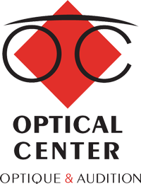
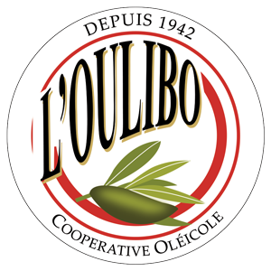

A propos
Etudiante en Master 1 International Business, à Kedge Business School, je suis à la recherche d’un stage de 4 à 6 mois à partir de fin Mars 2021.
EXPÉRIENCES PROFESIONNELLES
VENDEUSE MONTEUSE EN OPTIQUE

Optical Center | Février 2020 - Septembre 2020 | Carcassonne (France)
- Accueillir, conseiller, renseigner la clientèle
- Réalisation de la vente d'équipements optiques (choix montures et verres, prise de mesure, livraison, facturation)
VENDEUSE
Jennyfer| Novembre 2019 - Decembre 2019 | Qormi (Malte)
ASSISTANTE COMMERCIALE (STAGE)
AES Global | Avril 2019 - Juin 2019 | Cookstown (Royaume-Uni)
- Marketing, traduction Français/Anglais
- Participation a des salons, démarchage de client
VENDEUSE ET GUIDE

L'oulibo | Juillet 2017 - Aout 2017 | Cabezac (France)
- Visites guidées de la coopérative oléicole en français et anglais, vente, mise en rayon des produits et entretien de la boutique de la coopérative.